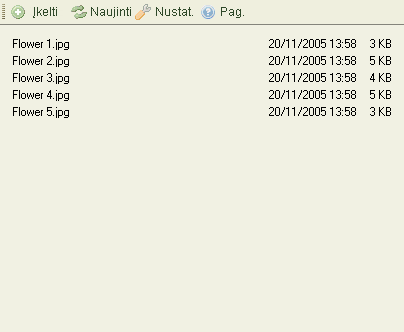

Failus per啪i奴r臈ti galima dviem skirtingais b奴dais, priklausomai nuo CKFinder nustatym懦 (啪i奴r臈ti "Nustatymus"). 沤emiau yra parodyti skirtumai tarp "Miniati奴r懦" "S膮ra拧懦"vaizdavimo tame pa膷iame segtuve:

Tam, kad pasirinktum臈te fail膮, padarytum臈te j寞 "aktyviu" CKFinder'yje, tiesiog spustel臈kite ant jo. Kas kart u啪vedus pelyt臋 ant failo, jis nusida啪o kita spalva. Pasirinktas failas nusida啪o kita spalva, kuri da啪niausiai b奴na m臈lyna.
I拧pl臈stin臈s operacijos yra pasiekiamos per "Kontekstin寞 meniu ". Galimi 拧ie pasirinkimai:

D臈mesio: Kai kurie kontekstinio meniu mygtukai gali b奴ti i拧jungti, priklausomai nuo CKFinder nustatym懦.
Failui pasirinkti, nuspauskite mygtuk膮 "Pasirinkti"
Failo per啪i奴rai nar拧ykl臈je, spustel臈kite "Per啪i奴r臈ti" mygtuk膮. Ne vis懦 r奴拧i懦 failai gali b奴ti matomi nar拧ykl臈se, ta膷iau 拧i galimyb臈 yra labai patogi paveiksliukams, tekstui ir PDF failams. Kituose atvejuose, nar拧ykl臈 papra拧ys J奴s懦 atverti fail膮 su tam tikra programa.
Failui atsisi懦sti, spustel臈kite "Atsisi懦sti mygtuk膮. Nar拧ykl臈 papra拧ys J奴s懦 pasirinkti viet膮 寞 kuri膮 i拧saugoti atsi懦st膮 fail膮 寞 kompiuter寞.
Failui pervadinti, tiesiog nuspauskite "Pervadinti" mygtuk膮 kontekstiniame meniu. Dialogo lentel臈, kurioje bus failo pavadinimas, atsiras, klausianti naujo pavadinimo. Tiesiog 寞ra拧ykite ir patvirtinkite.
Ne visi simboliai gali b奴ti naudojami pavadinimuose, d臈l tam tikr懦 apribojim懦 kurie yra
sistemose kuriose paleistas CKFinder. Pvz.: 拧ie simboliai negali b奴ti naudojami papk臈se
ir fail懦 pavadinimuose:
\ / : * ? " < > |
D臈mesio: pervadindami failus, nuorodos 寞 juos, esan膷ios kituose puslapiuose, bus pa啪eistos tod臈l failai buv臋 tame segtuve bus nepasiekiami i拧 i拧orini懦, prie拧 tai nustatyt懦 nuorod懦. Tod臈l, atsakingai naudokit臈s 拧ia funkcija.
Failui i拧trinti, spauskite "I拧trinti" mygtuk膮 kontekstiniame meniu. Patvirtinimo prane拧imas atsiras, tam, kad b奴t懦 patvirtinta operacija.
D臈mesio: i拧trynus failus, nuorodos 寞 juos, esan膷ios kituose puslapiuose, bus pa啪eistos tod臈l failai buv臋 tame segtuve bus nepasiekiami i拧 i拧orini懦, prie拧 tai nustatyt懦 nuorod懦. Tod臈l, atsakingai naudokit臈s 拧ia funkcija.